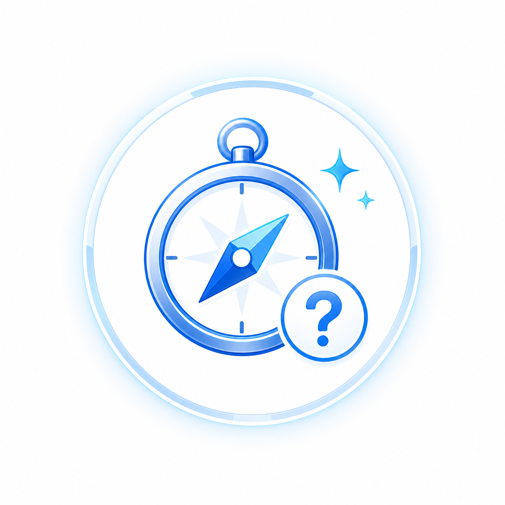
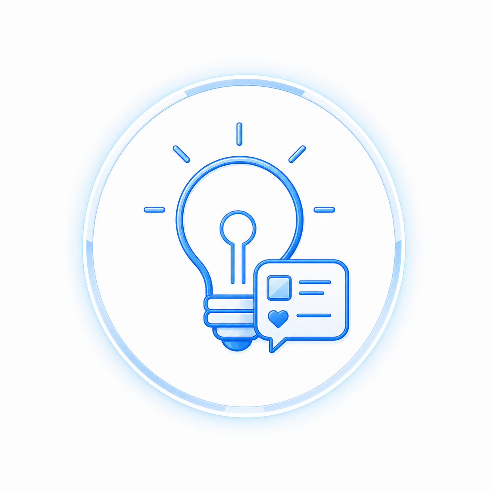
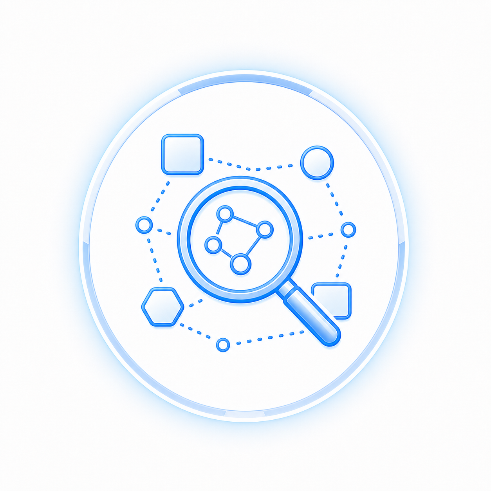

何から始めれば
いいかわからない
AIを使いたいけど、最初の一歩が見えない。
仕事の整理、情報収集、SNS発信、コンテンツ制作まで。
琥珀があなたの毎日をやさしく整えます。

AIを使いたいけど、最初の一歩が見えない。
答えは出ても、最後は自分でまとめてしまう。

毎日考えるのが大変で、手が止まってしまう。

SNS、教材、スタンプ、どこを見ればいいのか迷う。
難しい専門用語は使いません。やさしい言葉で、今日から使えるヒントを届けます。
タスク整理、リサーチ、発信準備。仕事に寄り添うAI秘書として見せていきます。
情報が散らばらないように、琥珀の活動と商品をこのサイトにまとめます。
未来都市から来た琥珀の物語や4コマ漫画など、楽しみながらAIに触れられます。
Discordは教材購入者向けの限定サポート導線です。一般公開の参加リンクではなく、購入後の案内として必要な方へお届けします。
プロフィールや世界観を見て、琥珀がどんなAI秘書か知りましょう。
SNSやプロジェクトを見て、琥珀の今の活動をチェックしましょう。
タスク整理やリサーチなど、仕事でできることをイメージしましょう。
SNS、教材、スタンプ、商品一覧。自分に合う入口から気軽に触れてみましょう。
AIを自分の仕事や発信に少しずつ取り入れて、未来をつくりましょう。
難しい話よりも、やさしい言葉でAIを身近に感じたい方に。
SNSやコンテンツ制作を、もっと楽に続けたい方に。
タスク整理や自動化で、時間と心の余白を作りたい方に。
未来から来たAI秘書の物語やキャラクターが好きな方に。
AIで業務の整理が進み、毎日の確認作業がかなり楽になりました。
個人事業主・AI活用
今まで諦めていた「絵を描くこと」に、AIの力を借りて挑戦できるようになりました。
クリエイター・AIイラスト制作
ホームページ制作は外注するものだと思っていましたが、自分で形にできる感覚が持てました。
事業者・Web制作
AIを使った漫画制作を学べる教材です。
教材を見る →日常会話で使える、琥珀のスタンプです。
LPを見る →琥珀の世界観やAI活用を本として届ける準備を進めています。
詳細を見る →仕事や発信にAI秘書を取り入れたい方は、公式LINEから相談できます。
公式LINEで相談 →両方です。琥珀は2100年から来た未来型AI秘書というキャラクターであり、SNS、教材、スタンプ、AI秘書導入へ広がるプロジェクトでもあります。
大丈夫です。琥珀は難しいAIの話を、できるだけやさしく、身近な言葉で届けることを大切にしています。
初めてなら、プロフィールとXがおすすめです。世界観を楽しみたい方はInstagramやTikTok、学びたい方はBrain教材を見てください。
Discordは購入者限定のサポート導線として運用予定です。一般公開リンクとしては掲載せず、購入後の案内で必要な方へお知らせします。
公式サイトでは押し売りしません。必要な方だけ、相談導線へ進める構成にしています。
琥珀と一緒に、AIを味方にして、軽やかな未来をつくりましょう。